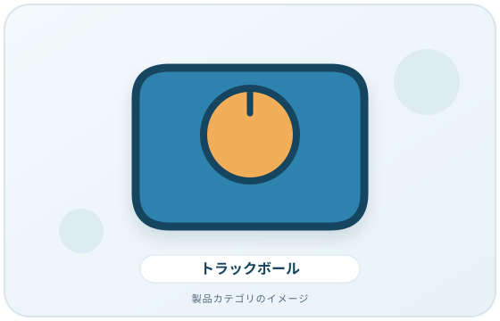
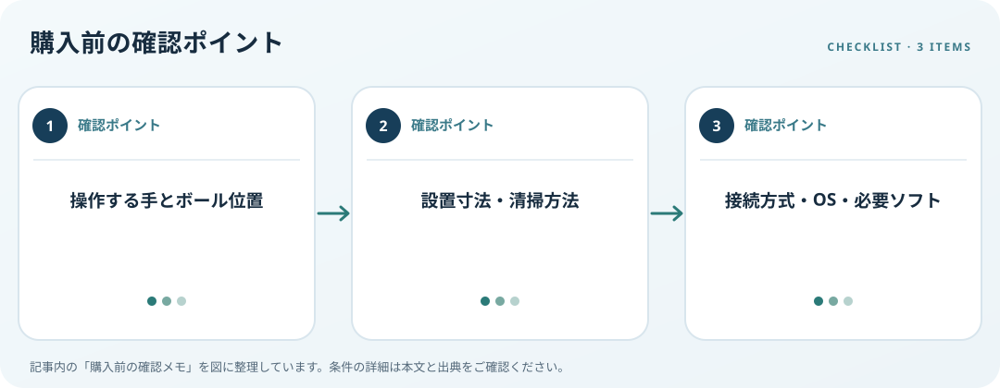

ボール位置、利き手、机上配置、Windowsのポインター設定を照合します。この記事では仕様の確認順を整理します。
画像・ボタンはAmazonアソシエイトリンクです。適格購入により紹介料を得る場合があります。

Amazon.co.jpで「トラックボール マウス」を探す ↗

操作方式と手を確認
親指で操作する方式や指で操作する方式など、ボール位置は製品ごとに異なります。右手・左手、クリック位置、スクロール方法、本体寸法を仕様図で比較します。試せる場合は展示品で操作部へ指が自然に届くか確かめ、慣れやすさは自分で判断します。
机上配置と清掃を考える
本体を置く平面、キーボードとの距離、ケーブルやレシーバー位置を測ります。OSHAはマウスをキーボード近くに置き、無理に腕を伸ばさない配置を勧めています。ボールの清掃・取り外し方法や交換部品がメーカーから案内されているかも見ます。
接続と設定を照合
有線・Bluetooth・USBレシーバーのどれがPCで使えるか、必要なソフトや対応OSを確認します。Windowsではポインター速度や主ボタンを変更できますが、個別製品の精度や快適さを保証するものではありません。返品条件も購入前に確認しましょう。
購入前の確認メモ
- 操作する手とボール位置
- 設置寸法・清掃方法
- 接続方式・OS・必要ソフト
この記事は出典の公開情報を購入前の確認項目に整理したもので、特定商品の使用・実測・レビュー・ランキング・価格・在庫の調査は行っていません。購入時には利用機器メーカーの最新仕様をご確認ください。
出典
- Pointer/Mouse — OSHA（確認日: 2026-10-10）
- Change mouse settings — Microsoft（確認日: 2026-10-10）
- Input accessibility — Microsoft（確認日: 2026-10-10）